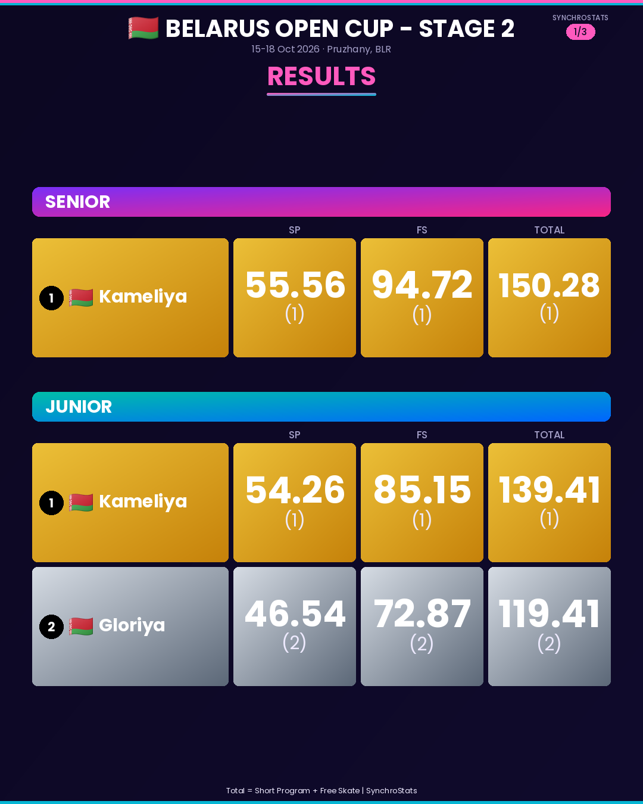
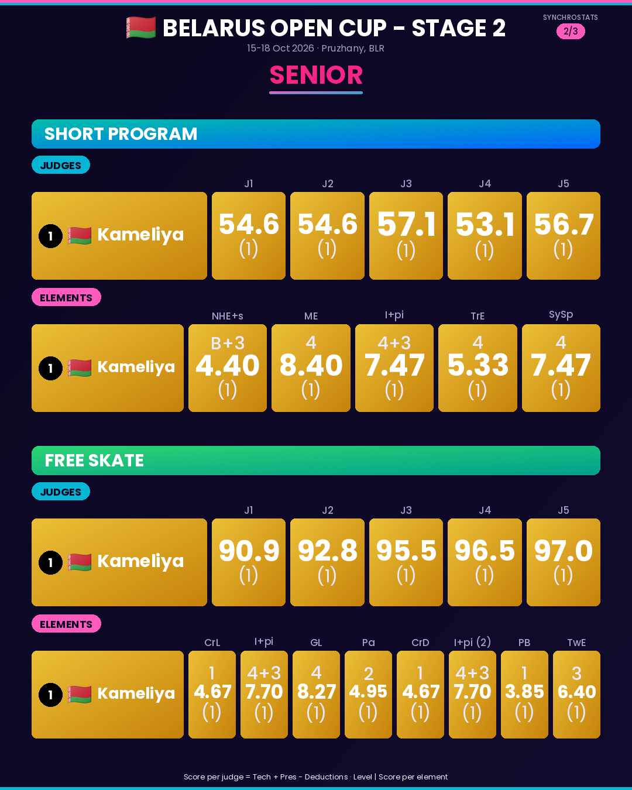
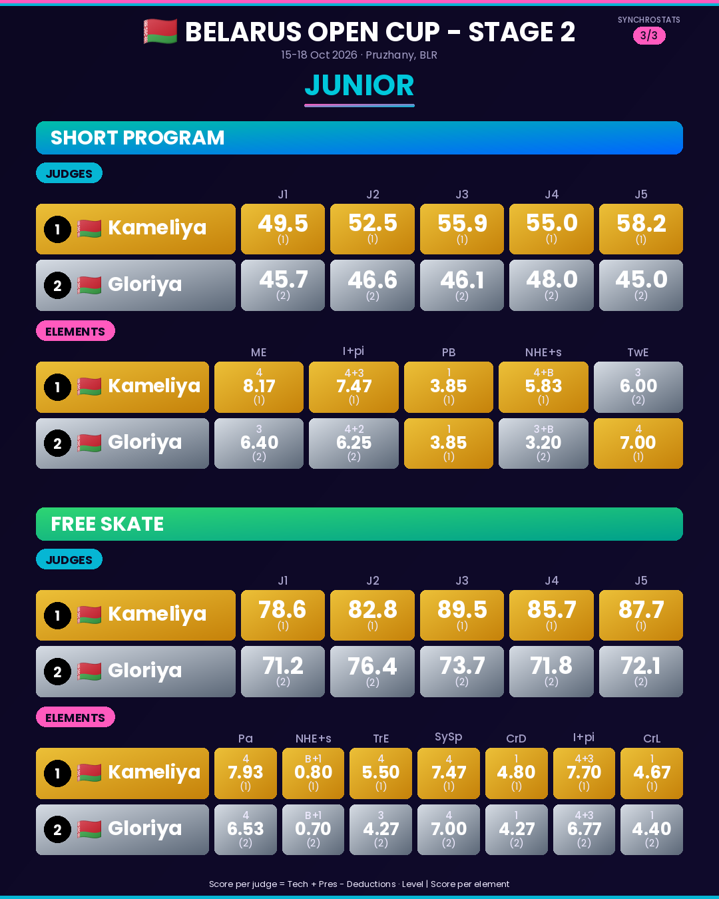

🔎 Vérifier les comptes (un appui ouvre Instagram) :
@team_gloria_gomel



📍 Belarus Open Cup - Stage 2 (15-18 Oct) 🇧🇾 🔹 Senior • Team Kameliya — 150.28 (SP 55.56 | FS 94.72) 🔹 Junior 🥇 Team Kameliya — 139.41 (SP 54.26 | FS 85.15) 🥈 Team Gloriya (@team_gloria_gomel) — 119.41 (SP 46.54 | FS 72.87) 📈 Follow every team's progression throughout the season on our website. 👉 Swipe for the full breakdown — judges & elements for both programs. 🔗 Full results & stats: synchrostats.github.io ⚠️ Scores compiled from official results — let us know if you spot any discrepancy! #SynchroSkating #SynchronizedSkating #BelarusOpenCupStage2 #BelarusSynchro #SynchroStats #FigureSkating #SynchroFamily #IceSkating #TeamKameliya #TeamGloriya